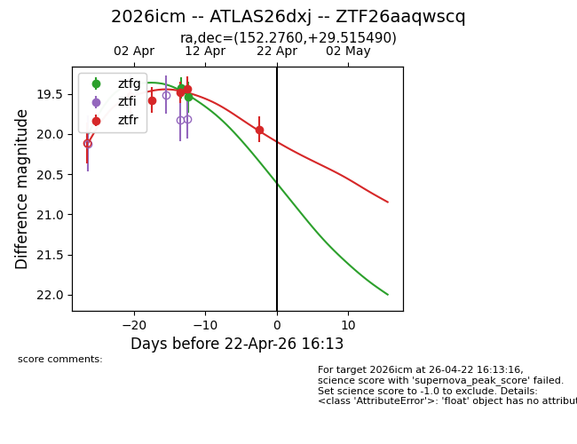
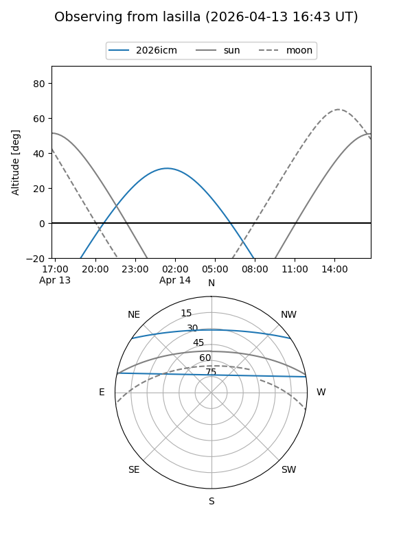
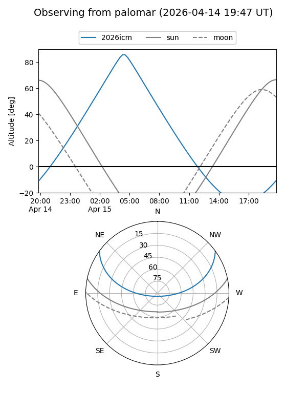
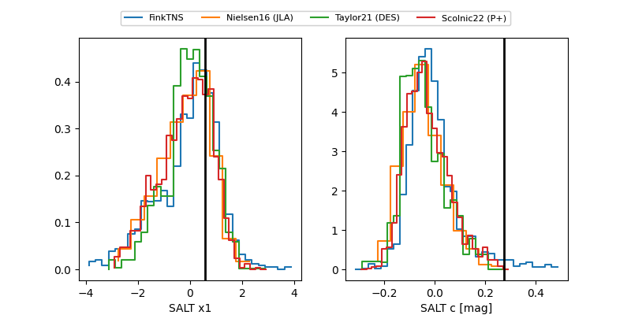

2026icm
Target 2026icm at 2026-04-22 16:16
Aliases and brokers:
FINK: link
Lasair: link
ALeRCE: link
TNS: link
YSE: link
alt names
ZTF26aaqwscq (ztf,fink_ztf)
2026icm (tns,yse)
ATLAS26dxj (atlas)
Coordinates:
equatorial (ra, dec) = 152.2760,+29.51549
equatorial (HMS+DMS) = 10:09:06.23,+29:30:55.76
galactic (l, b) = (199.3185,+54.37392)
Flags:
Photometry:
last ztfg=19.54, ztfr=19.94
2 ztfg, 5 ztfr detections
Lightcurve

Visibility


Additional plots
